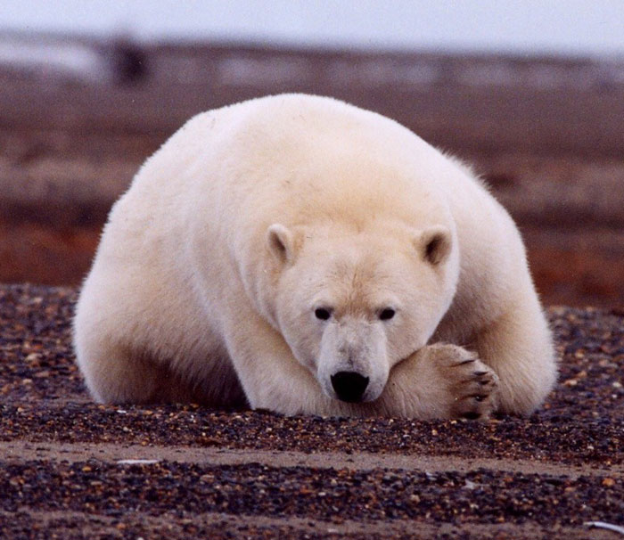

Gấu trắng Bắc Cực (danh pháp hai phần: Ursus maritimus) là một loài động vật có vú lớn của bộ Ăn thịt (Carnivora), họ Gấu (Ursidae). Chúng là loài động vật sống gần địa cực tìm thấy xung quanh Bắc Băng Dương và chúng là loài động vật ăn thịt lớn nhất trên đất liền.
Gấu trắng Bắc Cực (danh pháp hai phần: Ursus maritimus) là một loài động vật có vú lớn của bộ Ăn thịt (Carnivora), họ Gấu (Ursidae). Chúng là loài động vật sống gần địa cực tìm thấy xung quanh Bắc Băng Dương và chúng là loài động vật ăn thịt lớn nhất trên đất liền.
Gấu Bắc Cực sinh sống trên lãnh thổ của năm quốc gia khác nhau. Chúng có mặt ở ngoài khơi bờ biển phía bắc và tây bắc Alaska, Canada, Greenland, Svalbard (Na Uy) và Liên bang Nga.Quần thể gấu Bắc Cực ước tính khoảng 16.000 đến 35.000, với khoảng 60% ở Canada.
Gấu Bắc Cực là hình ảnh thu nhỏ của cuộc sống băng giá phía bắc Trái Đất, song xét về mặt tiến hóa của sinh giới, nó là động vật xuất hiện khá muộn. Vào khoảng 50000 đến 100000 năm trước, một cuộc chạy đua để phát triển của loài gấu nhằm đương đầu với cuộc sống khắc nghiệt đã diễn ra trên vùng Bắc Cực. Trong quá trình này, chúng đã trải qua nhiều lần thay đổi đáng kể.

Con gấu Bắc Cực đực trưởng thành nặng từ 400 đến 600 kg và đôi khi nặng hơn 800 kg. Con cái có kích thước bằng khoảng một nửa con đực và thông thường cân nặng 200–300 kg. Con đực trưởng thành dài khoảng 2,4 đến 2,6 m; con cái là 1,9 đến 2,1 m. Con gấu Bắc Cực to nhất từng được ghi nhận cân nặng 1002 kg và đứng cao 3,39 m.
Gấu Bắc Cực là một ví dụ tiêu biểu của một động vật hoàn toàn thích nghi với môi trường. Chúng được nhận ra rất nhanh bởi màu lông trắng của chúng. Không giống như các loài động vật có vú khác sống gần vùng cực, chúng không bao giờ rụng lông để trở thành sẫm hơn trong mùa hè. Lông của chúng không phải là màu trắng, nó là không màu và rỗng, giống như tóc trắng ở người. Một đặc thù thú vị của lớp lông gấu Bắc Cực là chúng xuất hiện với màu đen khi chụp ảnh bằng ánh sáng tím. Một số người cho rằng điều này là do lông của chúng truyền ánh sáng tới lớp da màu đen của gấu để giữ cho nó đủ ấm trong mùa đông lạnh lẽo không có mặt trời. Tuy nhiên, các phép đo chứng tỏ rằng lông của chúng hấp thụ rất mạnh các tia tím và cực tím. Điều này giải thích tại sao da chúng thông thường có màu vàng. Đôi khi có những con gấu Bắc Cực có màu khác. Tháng 2 năm 2004, hai con gấu Bắc Cực ở vườn thú Singapore có màu lục do kết quả của tảo mọc trên các ống lông rỗng của chúng. Người phát ngôn của vườn thú nói rằng tảo được sinh ra do điều kiện thời tiết nóng và ẩm của Singapore. Chúng đã được tẩy bằng dung dịch peroxid để phục hồi màu lông cũ của chúng. Loại tảo tương tự cũng đã mọc trên lông của ba con gấu Bắc Cực ở vườn thú San Diego mùa hè năm 1979. Chúng được điều trị bằng dung dịch nước muối.
_with_its_prey.jpg) Gấu Bắc Cực dành phần lớn thời gian để đi lại trên băng. Chúng tránh những cơn bão tuyết dữ dội bằng cách đào các hang trú ẩn tạm thời. Thường thì chỉ có gấu cái mang thai mới ngủ đông. Nhưng ở những nơi mà mùa đông lạnh hơn và thức ăn cũng khó tìm hơn, tất cả gấu Bắc Cực đều ngủ đông. Tuy ngủ nhưng chúng không chìm sâu vào giấc ngủ như sóc chuột hay sóc đất. Nhịp tim giảm từ 70 lần/phút xuống 8 lần/phút, nhưng thân nhiệt của chúng vẫn bình thường; và lúc ngủ trong hang, chúng có thể thức dậy ngay. Khi ở trong hang, chúng không ăn và sống nhờ vào lượng mỡ của cơ thể; trong thời gian này, chúng không hề đại tiểu tiện.
Gấu Bắc Cực dành phần lớn thời gian để đi lại trên băng. Chúng tránh những cơn bão tuyết dữ dội bằng cách đào các hang trú ẩn tạm thời. Thường thì chỉ có gấu cái mang thai mới ngủ đông. Nhưng ở những nơi mà mùa đông lạnh hơn và thức ăn cũng khó tìm hơn, tất cả gấu Bắc Cực đều ngủ đông. Tuy ngủ nhưng chúng không chìm sâu vào giấc ngủ như sóc chuột hay sóc đất. Nhịp tim giảm từ 70 lần/phút xuống 8 lần/phút, nhưng thân nhiệt của chúng vẫn bình thường; và lúc ngủ trong hang, chúng có thể thức dậy ngay. Khi ở trong hang, chúng không ăn và sống nhờ vào lượng mỡ của cơ thể; trong thời gian này, chúng không hề đại tiểu tiện.